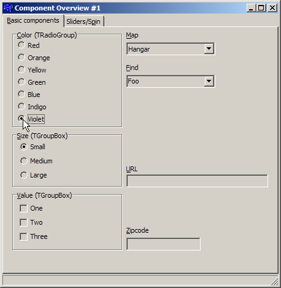
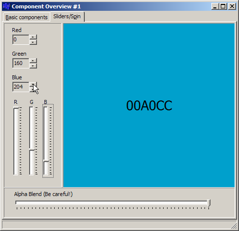

Session 3
Basic component overview: Page component (tabs), checkboxes, radio buttons, group boxes, radio groups, spin edit (up/down), sliders
During this session we looked at some of the basic UI components and how/when to use them. The amount of code was trivial,
mainly because we aren't doing anything with the user's choices yet.
Download the .exe.
| Basic components (TCheckBox, TRadioButton, TGroupBox) | | Sliders (TTrackBar) and spin edits (TUpDown) |
|---|
|

|
|
|
- MainForm.h - The definition of the main form. (Notice that it is all IDE-managed code since we haven't done much yet.)
- MainForm.cpp - The implementation. (Also very sparse.)
- Project files (Turbo C++) (XE 3) - The files needed to build/run the program.
- The maps (from the original DooM game, possibly the best game ever!):
Hangar
Nuclear Plant
Toxin Refinery
Command Control
Phobos Lab
Central Processing
Computer Station
Phobos Anomaly
Military Base
- Add shortcuts (hotkeys) to the "Sliders/spin edits" page. Note that hot keys don't work across pages (tabs) so you can re-use shortcut keys.
- Display the current color in RGB format (e.g. FFA055) in the colored panel. (Hint: use the Format function. It's like printf).
- Implement the behavior in the More tab. (Run the executable
and you'll see a third tab.)
